30-部署Python网站
Python编程语言
python的重要性不用多说，一图胜千言
现在大部分运维都会接触到python，无论是写部署脚本，还是自己独立开发工具，如网站等。
又或者公司使用的开发语言就是python，那么作为运维，必然要掌握python后端的部署。
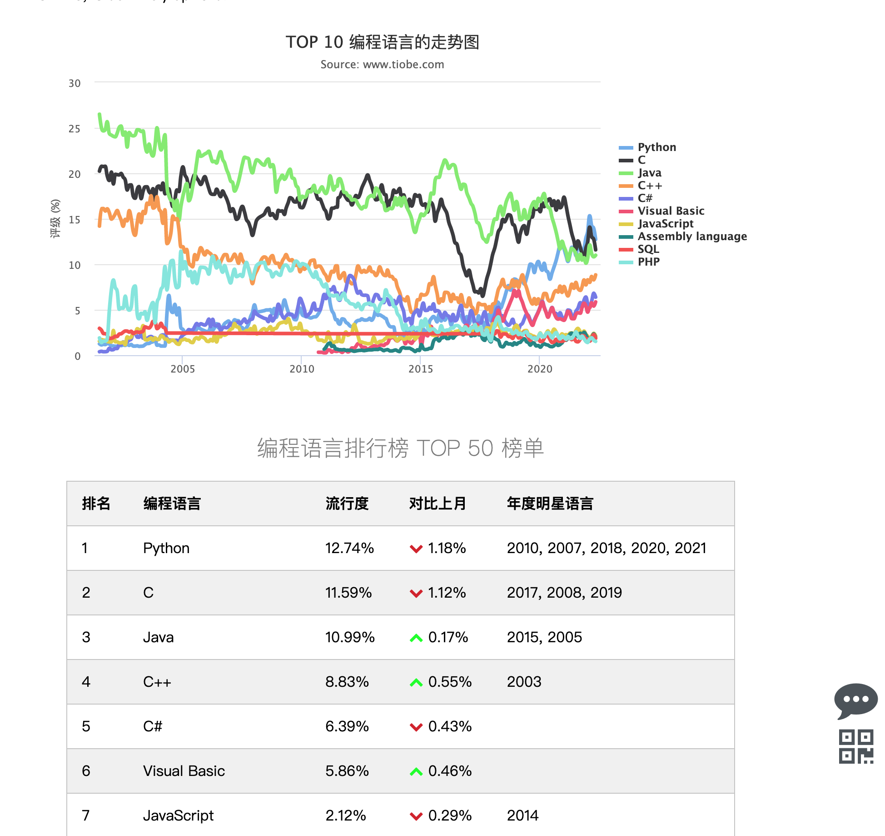
堡垒机（python产品）
跳板机、堡垒机是什么？
https://www.jumpserver.org/
这里能够将开源堡垒机部署好，你就已经具备了在生产环境下，维护python后端项目的上线能力，复杂度也足够了。
包括主流的前端、后端，数据库的部署能力。
为什么需要堡垒机
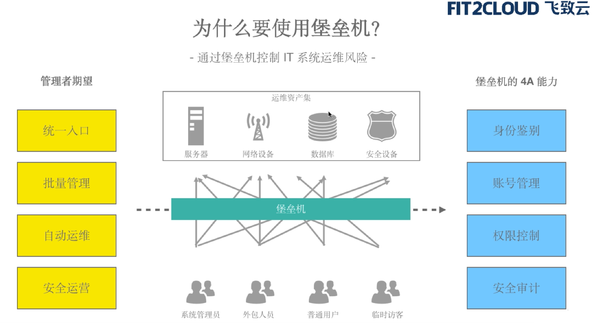
近年来数据安全事故频发，包括斯诺登事件、希拉里邮件丑闻以及携程宕机事件等，数据安全与防止泄露成为政府和企业都非常关心的议题，因此堡垒机也应运而生。
案例一
让我们共同回顾最具代表性的数据泄露引发的安全事故，美国著名的斯诺登事件。2013年6月，美国《华盛顿邮报》报道，美国国家安全局和联邦调查局于2007年启动了一个代号为“棱镜”的秘密监控项目，直接进入美国网际网路公司的中心服务器里挖掘数据、收集情报。洩露这些绝密文件的并非国家安全局的内部员工，而是国家安全局的外聘人员爱德华·斯诺登。
斯诺登事件若放在今天，将不可能发生，因为我们有了堡垒机！其中的管理员角色可以设置敏感操作的事前拦截、事中断开、事后审计，并且可以做到全程无代理实时监控。类似斯诺登这样的外聘人员将无法接触到这些敏感信息，更不用说泄露出来了。并且某些堡垒机支持录屏功能也可以帮助用户进行审计和追责。
案例二
2015年5月28日上午11点至晚上8点，在某旅游出行平台官网及APP上登录、下单或交易时，跳转均出现问题，导致操作无法顺利完成。造成直接经济损失巨大，按照其上一季度的财报公布的数据，宕机的损失为平均每小时106.48万美元。
最终，平台回应此事称系由于员工误操作删除了服务器上的执行代码导致。不论是因为黑客攻击还是员工误操作，真金白银800万美元的经验教训告诫我们对于数据的安全和备份必须要引起重视！堡垒机能解决这2个问题，一是攻击面小，二是可定制双机备份。
图解堡垒机、跳板机区别
跳板机
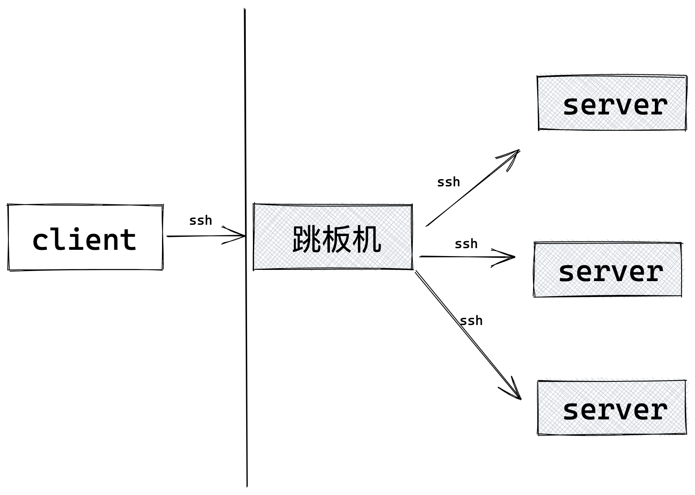
堡垒机
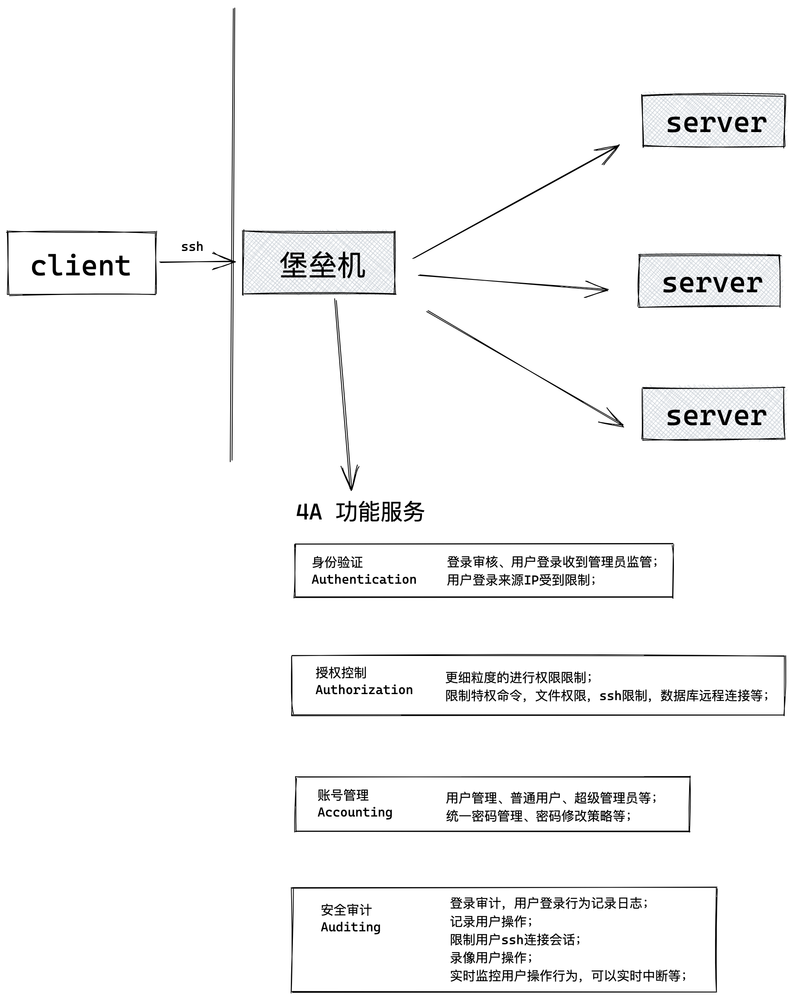
跳板机
跳板机就是一台服务器，运维人员在维护过程中首先要统一登录到这台服务器，然后再登录到目标设备进行维护和操作；
在腾讯，跳板机是开发者登录到服务器的唯一途径，开发者必须先登录跳板机，再通过跳板机登录到应用服务器。
跳板机属于内控堡垒机范畴，是一种用于单点登陆的主机应用系统。跳板机就是一台服务器，维护人员在维护过程中，首先要统一登录到这台服务器上，然后从这台服务器再登录到目标设备进行维护。但跳板机并没有实现对运维人员操作行为的控制和审计，此外，跳板机存在严重的安全风险，一旦跳板机系统被攻入，则将后端资源风险完全暴露无遗。
跳板机的优缺点
优势：集中式进行管理
缺点：
没有实现对运维人员操作行为的控制和审计，使用跳板机的过程中还是会出现误操作，违规操作等导致的事故，一旦出现操作事故很难定位到原因和责任人。
运维思想
- 审计是事后行为，可以发现问题及责任人，但是无法防止问题发生
- 只有事先严格控制，才能从源头解决根本问题。
- 系统账号的作用只是区分工作角色，但是无法确认该执行人的身份
堡垒机
堡垒机的理念起于跳板机；
人们逐渐认识到跳板机的不足，需要更新、更好的安全技术理念来实现运维操作管理，需要一种能满足角色管理与授权审批、信息资源访问控制、操作记录和审计、系统变更和维护控制要求，并生成一些统计报表配合管理规范来不断提升IT内控的合规性的产品。
2005年前后，运维堡垒机开始以一个独立的产品形态被广泛部署，有效地降低了运维操作风险，使得运维操作管理变得更简单、更安全。
2005年齐治科技研发出世界第一台运维堡垒机；（齐治科技官网http://www.shterm.com/）
堡垒机作用
1）核心系统运维和安全审计管控；
2）过滤和拦截非法访问、恶意攻击，阻断不合法命令，审计监控、报警、责任追踪；
3）报警、记录、分析、处理；
堡垒机核心功能
1）单点登录功能
支持对X11、Linux、Unix、数据库、网络设备、安全设备等一系列授权账号进行密码的自动化周期更改，简化密码管理，让使用者无需记忆众多系统密码，即可实现自动登录目标设备，便捷安全；
2）账号管理
设备支持统一账户管理策略，能够实现对所有服务器、网路设备、安全设备等账号进行集中管理，完成对账号整个生命周期的监控，并且可以对设备进行特殊角
设置，如：审计巡检员、运维操作员、设备管理员等自定义，以满足审计需求；
3）身份认证
设备提供统一的认证接口，对用户进行认证，支持身份认证模式包括动态口令、静态密码、硬件key、生物特征等多种认证方式，设备具有灵活的定制接口，可以与其他第三方认证服务器直接结合；
安全的认证模式，有效提高了认证的安全性和可靠性；
4）资源授权
设备提供基于用户、目标设备、时间、协议类型IP、行为等要素实现细粒度的操作授权，最大限度保护用户资源的安全；
5）访问控制
设备支持对不同用户进行不同策略的制定，细粒度的访问控制能够最大限度的
保护用户资源的安全，严防非法、越权访问事件的发生；
6）操作审计
设备能够对字符串、图形、文件传输、数据库等安全操作进行行为审计；通过设备录像方式监控运维人员对操作系统、安全设备、网络设备、数据库等进行的各种操作，对违规行为进行事中控制；对终端指令信息能够进行精确搜索，进行录像精确定位；
堡垒机应用场景
1）多个用户使用同一账号
多出现在同一工作组中，由于工作需要，同时系统管理员账号唯一，因此只能多用户共享同一账号；如果发生安全事故，不仅难以定位账号的实际使用者和责任人，而且无法对账号的使用范围进行有效控制，存在较大的安全风险和隐患；
2）一个用户使用多个账号。
目前一个维护人员使用多个账号时较为普遍的情况，用户需要记忆多套口令同时在多套主机系统、网络设备之间切换，降低工作效率，增加工作复杂度；
3）缺少统一的权限管理平台，难以实现更细粒度的命令权限控制。
维护人员的权限大多是粗放管理，无基于最小权限分配原则的用户权限管理，难以实现更细粒度的命令权限控制，系统安全性无法充分保证；
4）无法制定统一的访问审计策略，审计粒度粗。
各个网络设备、主机系统、数据库是分别单独审计记录访问行为，由于没有统一审计策略，而且各系统自身审计日志内容深浅不一，难以及时通过系统自身审计发现违规操作行为和追查取证；
5）传统的网路安全审计系统无法对维护人员经常使用的SSH、RDP等加密、图形操作协议进行内容审计。
目标价值
1）目标
堡垒机的核心思路是逻辑上将人与目标设备分离，建立“人-〉主账号（堡垒机用户账号）-〉授权—>从账号（目标设备账号）的模式;在这种模式下，基于唯一身份标识，通过集中管控安全策略的账号管理、授权管理和审计，建立针对维护人员的“主账号-〉登录—〉访问操作-〉退出”的全过程完整审计管理，实现对各种运维加密/非加密、图形操作协议的命令级审计。
2）系统价值
堡垒机的作用主要体现在下述几个方面：
企业角度
通过细粒度的安全管控策略，保证企业的服务器、网络设备、数据库、安全设备等安全可靠运行，降低人为安全风险，避免安全损失，保障企业效益。
管理员角度
所有运维账号的管理在一个平台上进行管理，账号管理更加简单有序；
通过建立用户与账号的唯一对应关系，确保用户拥有的权限是完成任务所需的最小权限；
直观方便的监控各种访问行为，能够及时发现违规操作、权限滥用等。
鉴于多账号同时使用超管进行的操作，便于实名制的认证和自然人的关联。
普通用户角度
运维人员只需记忆一个账号和口令，一次登录，便可实现对其所维护的多台设备的访问，无须记忆多个账号和口令，提高了工作效率，降低工作复杂度。
应用
一种用于单点登陆的主机应用系统，目前电信、移动、联通三个运营商广泛采用堡垒机来完成单点登陆。
在银行、证券等金融业机构也广泛采用堡垒机来完成对财务、会计操作的审计。
在电力行业的双网改造项目后，采用堡垒机来完成双网隔离之后跨网访问的问题，能够很好的解决双网之间的访问的安全问题。
相关厂商
目前，已经有相当多的厂商开始涉足这个领域，如：思福迪、帕拉迪、圣博润、尚思卓越、绿盟、[3]科友、齐治、金万维、极地、派拉等，这些都是目前行业里做的专业且受到企业用户好评的厂商，但每家厂商的产品所关注的侧重又有所差别。
以某运维安全审计产品为例，其产品更侧重于运维安全管理，它集单点登录、账号管理、身份认证、资源授权、访问控制和操作审计为一体的新一代运维安全审计产品，它能够对操作系统、网络设备、安全设备、数据库等操作过程进行有效的运维操作审计，使运维审计由事件审计提升为操作内容审计，通过系统平台的事前预防、事中控制和事后溯源来全面解决企业的运维安全问题，进而提高企业的IT运维管理水平。
案例
某连锁酒店企业
客户现状及需求：
IT系统分散在总部以及全国各地的分支连锁酒店，每个酒店所在的地区都有相应的技术人员进行系统运维；总部也有运维人员，对全国IT系统的总的运维质量负最终责任。
酒店实体越来越 多,总部的IT运维工作日益复杂，运维问题日益突出。一个最基础的场景是：当某酒店的IT系统出现问题，当地的IT运维人员无法解决时，就会向总部发起求 助。而此时，总部的技术工程师根本无法获悉最原始的问题，因为原来的问题在经过分部的运维工程师的操作后，已经面目全非，还可能引入了新的问题，整个过程没有记录，没有管控，找不到解决问题的线索。所以总部工程师迫切希望知道，从一开始问题的表象，到分支机构的运维人员的运维操作，都是怎么一回事。除此之外，还有另外的一些运维问题列表如下：
1、运维人员管理手段落后，时无法定责，也无法对各方的运维工作本身的质量和数量进行有效考核和评估。
2、设备账户管理缺失，该连锁酒店的每一名运维人员都要负责多套信息系统的运维管理工作，同时，大多数情况下，某套信息系统往往要多个运维人员联合管理。在这种情况下，口令丢失、登录失败、密码被随便修改等情况就时有发生。并且对第三方代维人员来说，也没有更强的针对设备账号的监测机制和有效的生命周期管理机制；
解决之道：
来进行统一认证，认证成功后对其具有权限的IT设备进行运维操作。整个运维过程全程录像，并有危险操作的告警及阻断功能。
通 过这种“跳板机”的解决方案，运维人员只需要记住一个口令就可以运维到被授权的设备，运维过程全程录像，且可以对应到运维人员。使用运维审计集中管理客户端软件，分散在全国各地的酒店IT系统的运维录像可以被总部的运维人员随时查询，还可以通过播放器进行远程的录像流畅播放。
客户收益:
运维安全审计堡垒平台之后，所有的运维人员都以统一的用户身份登入系统；所有的运维操作都被记录；操作对应到实际的自然人而不是设备账户。在出现问题后，可以迅速的调出运维操作录像进行查看，根据录像进行问题的追本溯源，直接定位问题根源所在，为解决IT系统的故障提供了宝贵的第一手资料。
在部署安全审计堡垒平台之后，问题的解决时间平均缩短到一到两个小时，数量级的提高了运维工作质量。另外，由于有录像可以学习，交流和借鉴，从一定程度上，提高了所有运维人员的运维经验。
简单总结堡垒机
简单来说，堡垒机的核心价值就是用来解决“运维权限混乱，操作无审计”的问题。当我们的公司运维人员越来越多，所需要管理的主机资源也越来越多时，管理跟技术手段不到位所带来的运维安全风险也越来越高，这个时候我们应该怎么做呢？
• 首先，在事前，我们需要规定用户所能访问资源的权限，使权限实现最小化
打个比方，我们把主机资源看作是一个房子，那我们的运维人员就是一个客人，普通客人只能在我们里面客厅活动，如果说他要进入卧室，那需要主人的同意。
• 第二，在事中的时候，我们需要实时监控我们运维人员的操作，一旦发现有危险操作时可以进行阻断。就好比，在房间里面装了一个“摄像头”，我们可以看到客人在房间里面的一举一动。
• 事后，我们需要追溯溯源，还原事故现场；
客人在“房间”里的一举一动，都会被录制下来，方便回放查看。
政府、企业，以及其他各行各业都会面临着运维安全风险：
• 第一，就是来源身份定位难：当多个运维人员使用相同的账号对主机进行操作时，我们的管理者无法区分谁是谁，一旦发生运维事故，很难快速地定位“责任人”。
• 第二，就是操作过程不透明：顾名思义，就是指我们的运维人员做了什么管理者无从得知？尤其是在第三方运维场景，我们经常会听到数据窃取、违规操作导致服务器异常等此类的新闻，我们缺乏相应的手段进行规避。
• 第三，账号共享、权限泛滥：我们知道人是最难管理的，一旦掌握了主机的账号密码，就不可避免地会造成账号的泄露，最终导致权限泛滥、难以管理。
• 第四，是合规性要求。无论是网络安全法、等级保护，还是行业的法律法规，都有要求我们建设安全、完善的审计系统，从而确保我们的审计信息是完整、安全、可靠。
针对上述我们提到的运维安全风险，安恒堡垒机是怎么解决的呢！简单来讲：
• 堡垒机给每个运维人员分配了一个堡垒机账户，确保身份的唯一，其次，利用堡垒机的单点登录能力，使我们的运维人员无需知道主机的账号密码，从而可以有效防止账号泄漏和共享，并且运维人员需要访问什么主机，需要我们的管理者事先授权。
• 另外，我们通过实时监控、录像回放等方式，也有效地解决了操作过程不透明的问题。
• 总的来讲，安恒堡垒机通过一定的技术手段实现了事前的授权、事中的监控、事后的审计，满足合规性的要求
部署文档
https://docs.jumpserver.org/zh/master/
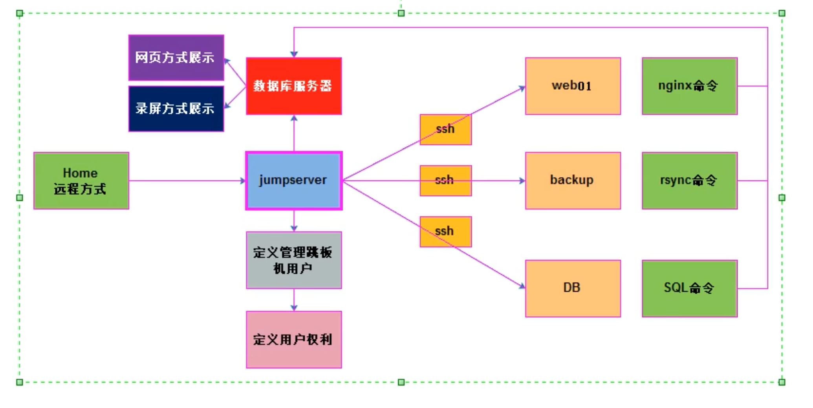
部署实践
当前选择的版本是
https://docs.jumpserver.org/zh/v2.12.0/install/setup_by_fast/
这种开源工具，没必要追求太新的，功能太多，用不上，且部署繁琐。
虽提供了docker部署，暂时先不用。
1. 基础组件
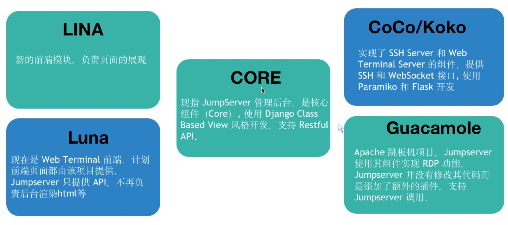
2.架构图
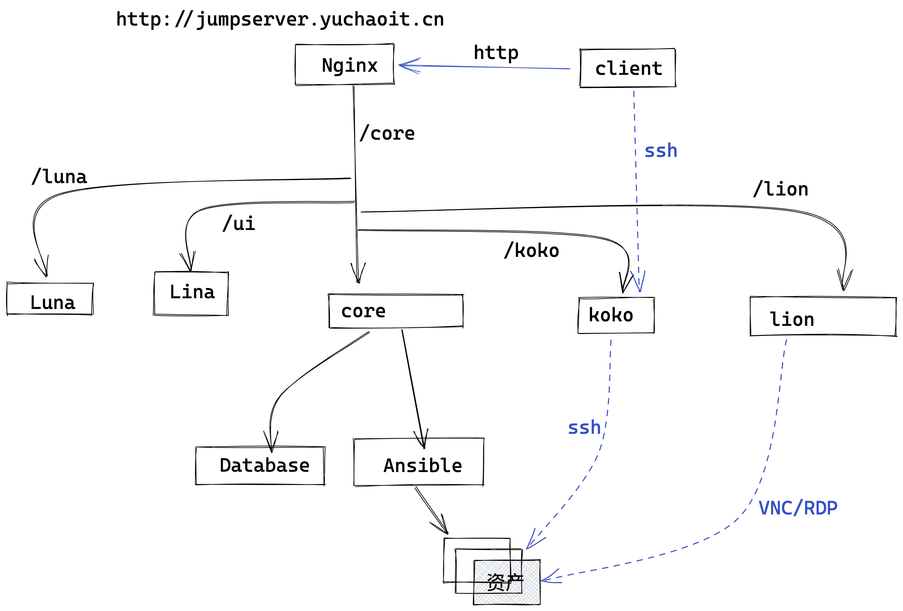
Lina 是 JumpServer 的前端 UI 项目, 主要使用 Vue, Element UI 完成, 名字来源于 Dota 英雄 Lina
Luna 是 JumpServer Web Terminal 前端项目（网页命令行）
Core 是 JumpServer 的核心组件，由 Django 二次开发而来。
Koko 是 Go 版本的 coco，重构了 coco 的 SSH/SFTP 服务和 Web Terminal 服务。
Lion 使用了 Apache 软件基金会的开源项目 Guacamole，JumpServer 使用 Golang 和 Vue 重构了 Guacamole 实现 RDP/VNC 协议跳板机功能。
JumpServer 分为多个组件，大致的架构如上图所示。其中 Lina 和 Luna 为纯静态文件，最终由 nginx 整合。
3. 服务器硬件环境
jumpserver服务器
4C cpu/16GB memory/200G disk
centos7.* 64位
硬盘主要用于存储审计录像，因此需要根据客户的资产数量，以及使用程度评估，建议在200G以上；
以100台Linux资产为例，日常使用，200G磁盘可以存储5~6个月的录屏。
存储空间计算规则
- 每小时产生录像约10M
- 每天操作约4h
- 保留过期期限30天
存储空间，以100台机器算
>>> 10*4*30*100/1024
117.1875
4.基础环境准备
注意得是新机器，否则你可能会遇见各种坑，那就随机应变的解决吧
1.环境准备
centos7
关闭防火墙 firewalld selinux
iptables -F
systemctl stop firewalld
systemctl disable firewalld
# yum源配置
wget -O /etc/yum.repos.d/CentOS-Base.repo http://mirrors.aliyun.com/repo/Centos-7.repo
wget -O /etc/yum.repos.d/epel.repo http://mirrors.aliyun.com/repo/epel-7.repo
# 基础环境安装
yum install -y bash-completion vim lrzsz wget expect net-tools nc nmap tree dos2unix htop iftop iotop unzip telnet sl psmisc nethogs glances bc ntpdate openldap-devel
2.第一个里程：需要部署跳板机依赖软件，重要
yum -y install git python-pip gcc automake autoconf python-devel vim sshpass lrzsz readline-devel zlib zlib-devel openssl openssl-devel
git --- 用于下载jumpserver软件程序
python-pip --- 用于安装python软件
gcc --- 解析代码中C语言信息（解释器）
automake --- 实现软件自动编译过程
autoconf --- 实现软件自动配置过程
python-devel --- 系统中需要有python依赖
readline-devel --- 在操作python命令信息时，实现补全功能
3.修改系统字符集为中文
localedef -c -f UTF-8 -i zh_CN zh_CN.UTF-8
export LC_ALL=zh_CN.UTF-8
# 写入配置文件，永久生效
echo 'LANG="zh_CN.UTF-8"' > /etc/locale.conf
# 检查系统字符集
[root@master-61 ~]#export LC_ALL=zh_CN.UTF-8
[root@master-61 ~]#
[root@master-61 ~]#locale
LANG=en_US.UTF-8
LC_CTYPE="zh_CN.UTF-8"
LC_NUMERIC="zh_CN.UTF-8"
LC_TIME="zh_CN.UTF-8"
LC_COLLATE="zh_CN.UTF-8"
LC_MONETARY="zh_CN.UTF-8"
LC_MESSAGES="zh_CN.UTF-8"
LC_PAPER="zh_CN.UTF-8"
LC_NAME="zh_CN.UTF-8"
LC_ADDRESS="zh_CN.UTF-8"
LC_TELEPHONE="zh_CN.UTF-8"
LC_MEASUREMENT="zh_CN.UTF-8"
LC_IDENTIFICATION="zh_CN.UTF-8"
LC_ALL=zh_CN.UTF-8
5.组件版本
https://docs.jumpserver.org/zh/v2.12.0/install/setup_by_lb/
通过负载均衡组件，即可得知需要部署的所有组件
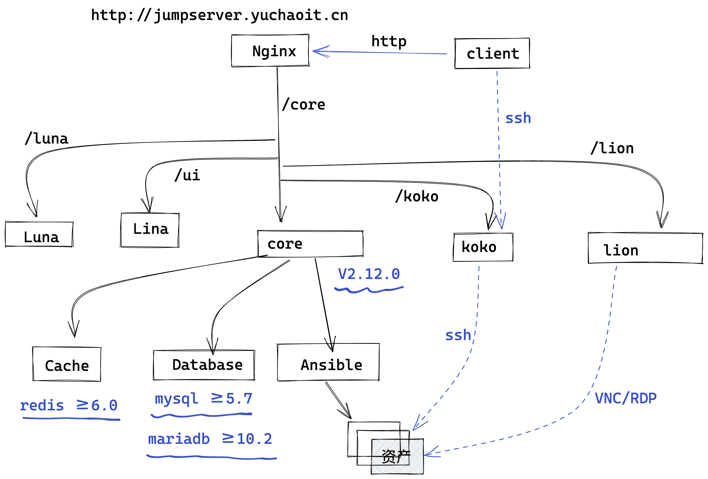
6.安装加速源提示
pip和npm安装依赖包，速度都比较慢，分别可以设置加速源
cat > ~/.pip.conf <<EOF
[global]
index-url=https://pypi.tuna.tsinghua.edu.cn/simple
trusted-host = pypi.tuna.tsinghua.edu.cn
EOF
npm config set registry https://registry.npm.taobao.org
npm config get registry
一.部署mysql5.7
重要，友情提醒
友情提示：mysql数据库密码请使用 "字母+数字"
可以和超哥配置的一样
用"yuchao666"
数据库密码连接，读取的是字符串类型
如果你的数据库密码是 "123456"这样的纯数字，
在config.yml里面填入的DB_PASSWORD: "123456" 需要像这样，添加引号，否则报错。
https://docs.jumpserver.org/zh/v2.12.0/install/setup_by_fast/
该2.12.0版本要求数据库版本高于 mysql >=5.7
设置 Repo
yum -y localinstall http://mirrors.ustc.edu.cn/mysql-repo/mysql57-community-release-el7.rpm
关闭秘钥检查
[root@db-52 /etc/yum.repos.d]#sed -i '/gpgcheck=1/c gpgcheck=0' /etc/yum.repos.d/mysql-community*
安装 MySQL
yum clean all
yum install -y mysql-community-server
# 数据库参数解释
使用--initialize-insecure，不会root生成密码。这是不安全的；假设您在将服务器投入生产使用之前及时为帐户分配了密码。
https://dev.mysql.com/doc/refman/5.7/en/data-directory-initialization.html
配置 MySQL
if [ ! "$(cat /usr/bin/mysqld_pre_systemd | grep -v ^\# | grep initialize-insecure )" ]; then
sed -i "s@--initialize @--initialize-insecure @g" /usr/bin/mysqld_pre_systemd
fi
启动 MySQL
systemctl enable mysqld
systemctl start mysqld
数据库授权，改密码
[root@db-52 /etc/yum.repos.d]#mysql -uroot
Welcome to the MySQL monitor. Commands end with ; or \g.
Your MySQL connection id is 3
Server version: 5.7.38 MySQL Community Server (GPL)
Copyright (c) 2000, 2022, Oracle and/or its affiliates.
Oracle is a registered trademark of Oracle Corporation and/or its
affiliates. Other names may be trademarks of their respective
owners.
Type 'help;' or '\h' for help. Type '\c' to clear the current input statement.
mysql> create database jumpserver default charset 'utf8';
Query OK, 1 row affected (0.00 sec)
mysql> set global validate_password_policy=LOW;
Query OK, 0 rows affected (0.00 sec)
mysql> create user 'jumpserver'@'%' identified by 'www.yuchaoit.cn';
Query OK, 0 rows affected (0.00 sec)
mysql> grant all on jumpserver.* to 'jumpserver'@'%';
Query OK, 0 rows affected (0.00 sec)
mysql> flush privileges;
Query OK, 0 rows affected (0.00 sec)
mysql>
二.部署redis-6.2.4
# 下载源码
yum -y install epel-release wget make gcc-c++
cd /opt
wget https://download.redis.io/releases/redis-6.2.4.tar.gz
# 安装redis
tar -xf redis-6.2.4.tar.gz
cd redis-6.2.4
make && make install PREFIX=/usr/local/redis
# 配置redis
cp redis.conf /etc/redis.conf
sed -i "s/bind 127.0.0.1/bind 0.0.0.0/g" /etc/redis.conf
sed -i "s/daemonize no/daemonize yes/g" /etc/redis.conf
sed -i "561i maxmemory-policy allkeys-lru" /etc/redis.conf
sed -i "481i requirepass www.yuchaoit.cn" /etc/redis.conf
# 配置启动脚本
cat >/etc/systemd/system/redis.service <<EOF
[Unit]
Description=Redis persistent key-value database
After=network.target
After=network-online.target
Wants=network-online.target
[Service]
Type=forking
PIDFile=/var/run/redis_6379.pid
ExecStart=/usr/local/redis/bin/redis-server /etc/redis.conf
ExecReload=/bin/kill -s HUP $MAINPID
ExecStop=/bin/kill -s QUIT $MAINPID
[Install]
WantedBy=multi-user.target
EOF
# 启动redis
systemctl enable redis
systemctl start redis
# 测试redis
[root@db-52 /opt/redis-6.2.4]#/usr/local/redis/bin/redis-cli --version
redis-cli 6.2.4
[root@db-52 /opt/redis-6.2.4]#/usr/local/redis/bin/redis-cli auth www.yuchaoit.cn
OK
三.部署core
https://docs.jumpserver.org/zh/v2.12.0/dev/build/#python3
友情提醒，请给后端服务器，至少4G内存。
Core⚓︎
Core 是 JumpServer 的核心组件，由 Django 二次开发而来, 内置了 Lion Celery Beat Flower Daphne 服务。
环境要求⚓︎
| Name | Core | Python | MySQL | MariaDB | Redis |
|---|---|---|---|---|---|
| Version | v2.12.0 | >= 3.6 | >= 5.7 | >= 10.2 | >= 6 |
下载源代码⚓︎
可以从 Github 网站上获取最新的 Release 副本。这些版本是最新代码的稳定快照，从项目网站下载的源将采用 .tar.gz 存档的形式，通过命令行中提取该存档：
mkdir /opt/jumpserver-v2.12.0
wget -O /opt/jumpserver-v2.12.0.tar.gz https://github.com/jumpserver/jumpserver/archive/refs/tags/v2.12.0.tar.gz
# 去除解压目录的一级目录
tar -xf jumpserver-2.12.0.tar.gz -C /opt/jumpserver-v2.12.0 --strip-components 1
# 安装该项目依赖的linux依赖
[root@master-61 /opt/jumpserver-v2.12.0]#ll /opt/jumpserver-v2.12.0/requirements/
总用量 28
requirements/ # 对应操作系统需要的依赖包
├── alpine_requirements.txt # Alpine
├── deb_buster_requirements.txt # Debian 10
├── deb_requirements.txt # 基于 Debian 的发行版(如: Ubuntu)
├── issues.txt # macOS 一些问题及解决方案
├── mac_requirements.txt # macOS
├── requirements.txt # python
└── rpm_requirements.txt # 基于 RedHat 的发行版(如: CentOS)
# 安装命令
yum install -y $(cat /opt/jumpserver-v2.12.0/requirements/rpm_requirements.txt)
安装python3
从 Python 网站获取部署 Python3 的方法，请根据 环境要求，通过命令行中判断是否安装完成。
1.当前机器只有python2
[root@master-61 /opt/jumpserver-v2.12.0]#python
python python2 python2.7 python2.7-config python2-config python-config
2.编译安装python3
yum install gcc patch libffi-devel python-devel zlib-devel bzip2-devel openssl-devel ncurses-devel sqlite-devel readline-devel tk-devel gdbm-devel db4-devel libpcap-devel xz-devel -y
下载源码，且编译安装
cd /opt && wget https://www.python.org/ftp/python/3.6.9/Python-3.6.9.tgz
tar -zxf Python-3.6.9.tgz
cd Python-3.6.9/
./configure --prefix=/opt/python369
make && make install
设置环境变量
echo 'export PATH=$PATH:/opt/python369/bin/' >> /etc/profile
source /etc/profile
查看版本
[root@master-61 /opt/Python-3.6.9]#python3 -V
Python 3.6.9
安装python虚拟环境
python的项目管理方式，在线上要基于虚拟环境部署，便于管理多项目，防止依赖冲突。
这里需要对python开发的模块依赖管理有一定的认识，方可理解；
1.创建虚拟环境
cd /opt && python3 -m venv /opt/py3
2. 激活虚拟环境，通过PATH即可理解原理
[root@master-61 /opt]#source /opt/py3/bin/activate
(py3) [root@master-61 /opt]#
(py3) [root@master-61 /opt]#echo $PATH
/opt/py3/bin:/usr/local/sbin:/usr/local/bin:/usr/sbin:/usr/bin:/root/bin:/opt/python369/bin/
安装core后端的项目依赖
虚拟环境，必须每次都要激活后，方可使用该python解释器。
(py3) [root@master-61 /opt]#cd /opt/jumpserver-v2.12.0/requirements/
(py3) [root@master-61 /opt/jumpserver-v2.12.0/requirements]#ls
alpine_requirements.txt deb_requirements.txt mac_requirements.txt rpm_requirements.txt
deb_buster_requirements.txt issues.txt requirements.txt
(py3) [root@master-61 /opt/jumpserver-v2.12.0/requirements]#pip install -r requirements.txt
检查解释器的模块依赖
安装的模块依赖大约这么多，不一定完全一样
(py3) [root@master-61 /opt/jumpserver-v2.12.0/requirements]#pip list | wc -l
198
修改core配置文件
这里需要对整个jumpserver后端进行配置修改
(py3) [root@master-61 /opt/jumpserver-v2.12.0]#cp config_example.yml config.yml
整体配置，按照要求更改
以及注意了是yml语法配置文件，别写错了
生成服务运行需要的随机密钥，自动创建即可
if [ "$SECRET_KEY" = "" ]; then SECRET_KEY=`cat /dev/urandom | tr -dc A-Za-z0-9 | head -c 50`; echo "SECRET_KEY=$SECRET_KEY" >> ~/.bashrc; echo $SECRET_KEY; else echo $SECRET_KEY; fi
if [ "$BOOTSTRAP_TOKEN" = "" ]; then BOOTSTRAP_TOKEN=`cat /dev/urandom | tr -dc A-Za-z0-9 | head -c 16`; echo "BOOTSTRAP_TOKEN=$BOOTSTRAP_TOKEN" >> ~/.bashrc; echo $BOOTSTRAP_TOKEN; else echo $BOOTSTRAP_TOKEN; fi
检查2个随机密钥的值
(py3) [root@master-61 /opt/jumpserver-v2.12.0]#tail -2 ~/.bashrc
SECRET_KEY=WRqzELX3kmZ7IYtQllNuSAECWJgNY2iB687EgvWiX4RmEJdYcZ
BOOTSTRAP_TOKEN=JAd0p9VKrz4Y7sJT
配置文件，使用该变量。
# SECURITY WARNING: keep the secret key used in production secret!
# 加密秘钥 生产环境中请修改为随机字符串，请勿外泄, 可使用命令生成
# $ cat /dev/urandom | tr -dc A-Za-z0-9 | head -c 49;echo
SECRET_KEY: "$SECRET_KEY"
# SECURITY WARNING: keep the bootstrap token used in production secret!
# 预共享Token koko 和 lion 用来注册服务账号，不在使用原来的注册接受机制
BOOTSTRAP_TOKEN: "$BOOTSTRAP_TOKEN"
# Development env open this, when error occur display the full process track, Production disable it
# DEBUG 模式 开启DEBUG后遇到错误时可以看到更多日志
DEBUG: true # 开发建议打开 DEBUG, 生产环境应该关闭
# DEBUG, INFO, WARNING, ERROR, CRITICAL can set. See https://docs.djangoproject.com/en/1.10/topics/logging/
# 日志级别
LOG_LEVEL: DEBUG # 开发建议设置 DEBUG, 生产环境推荐使用 ERROR
# LOG_DIR:
# Session expiration setting, Default 24 hour, Also set expired on on browser close
# 浏览器Session过期时间，默认24小时, 也可以设置浏览器关闭则过期
# SESSION_COOKIE_AGE: 86400
SESSION_EXPIRE_AT_BROWSER_CLOSE: true # 浏览器关闭 session 过期
# Database setting, Support sqlite3, mysql, postgres ....
# 数据库设置
# See https://docs.djangoproject.com/en/1.10/ref/settings/#databases
# SQLite setting:
# 使用单文件sqlite数据库
# DB_ENGINE: sqlite3
# DB_NAME:
# MySQL or postgres setting like:
# 使用Mysql作为数据库
DB_ENGINE: mysql
DB_HOST: 10.0.0.52 # 自行配置 数据库相关
DB_PORT: 3306
DB_USER: jumpserver
DB_PASSWORD: www.yuchaoit.cn
DB_NAME: jumpserver
# When Django start it will bind this host and port
# ./manage.py runserver 127.0.0.1:8080
# 运行时绑定端口, 将会使用 0.0.0.0:8080 0.0.0.0:8070 端口
HTTP_BIND_HOST: 0.0.0.0
HTTP_LISTEN_PORT: 8080
WS_LISTEN_PORT: 8070
# Use Redis as broker for celery and web socket
# Redis配置
REDIS_HOST: 10.0.0.52 # 自行配置 Redis 相关
REDIS_PORT: 6379
REDIS_PASSWORD: www.yuchaoit.cn
# REDIS_DB_CELERY: 3
# REDIS_DB_CACHE: 4
# Use OpenID Authorization
# 使用 OpenID 进行认证设置
# AUTH_OPENID: False # True or False
# BASE_SITE_URL: None
# AUTH_OPENID_CLIENT_ID: client-id
# AUTH_OPENID_CLIENT_SECRET: client-secret
# AUTH_OPENID_PROVIDER_ENDPOINT: https://op-example.com/
# AUTH_OPENID_PROVIDER_AUTHORIZATION_ENDPOINT: https://op-example.com/authorize
# AUTH_OPENID_PROVIDER_TOKEN_ENDPOINT: https://op-example.com/token
# AUTH_OPENID_PROVIDER_JWKS_ENDPOINT: https://op-example.com/jwks
# AUTH_OPENID_PROVIDER_USERINFO_ENDPOINT: https://op-example.com/userinfo
# AUTH_OPENID_PROVIDER_END_SESSION_ENDPOINT: https://op-example.com/logout
# AUTH_OPENID_PROVIDER_SIGNATURE_ALG: HS256
# AUTH_OPENID_PROVIDER_SIGNATURE_KEY: None
# AUTH_OPENID_SCOPES: "openid profile email"
# AUTH_OPENID_ID_TOKEN_MAX_AGE: 60
# AUTH_OPENID_ID_TOKEN_INCLUDE_CLAIMS: True
# AUTH_OPENID_USE_STATE: True
# AUTH_OPENID_USE_NONCE: True
# AUTH_OPENID_SHARE_SESSION: True
# AUTH_OPENID_IGNORE_SSL_VERIFICATION: True
# AUTH_OPENID_ALWAYS_UPDATE_USER: True
# Use Radius authorization
# 使用Radius来认证
# AUTH_RADIUS: false
# RADIUS_SERVER: localhost
# RADIUS_PORT: 1812
# RADIUS_SECRET:
# CAS 配置
# AUTH_CAS': False,
# CAS_SERVER_URL': "http://host/cas/",
# CAS_ROOT_PROXIED_AS': 'http://jumpserver-host:port',
# CAS_LOGOUT_COMPLETELY': True,
# CAS_VERSION': 3,
# LDAP/AD settings
# LDAP 搜索分页数量
# AUTH_LDAP_SEARCH_PAGED_SIZE: 1000
#
# 定时同步用户
# 启用 / 禁用
# AUTH_LDAP_SYNC_IS_PERIODIC: True
# 同步间隔 (单位: 时) (优先）
# AUTH_LDAP_SYNC_INTERVAL: 12
# Crontab 表达式
# AUTH_LDAP_SYNC_CRONTAB: * 6 * * *
#
# LDAP 用户登录时仅允许在用户列表中的用户执行 LDAP Server 认证
# AUTH_LDAP_USER_LOGIN_ONLY_IN_USERS: False
#
# LDAP 认证时如果日志中出现以下信息将参数设置为 0 (详情参见：https://www.python-ldap.org/en/latest/faq.html)
# In order to perform this operation a successful bind must be completed on the connection
# AUTH_LDAP_OPTIONS_OPT_REFERRALS: -1
# OTP settings
# OTP/MFA 配置
# OTP_VALID_WINDOW: 0
# OTP_ISSUER_NAME: Jumpserver
# Perm show single asset to ungrouped node
# 是否把未授权节点资产放入到 未分组 节点中
# PERM_SINGLE_ASSET_TO_UNGROUP_NODE: False
#
# 同一账号仅允许在一台设备登录
# USER_LOGIN_SINGLE_MACHINE_ENABLED: False
#
# 启用定时任务
# PERIOD_TASK_ENABLE: True
#
# 启用二次复合认证配置
# LOGIN_CONFIRM_ENABLE: False
#
# Windows 登录跳过手动输入密码
# WINDOWS_SKIP_ALL_MANUAL_PASSWORD: False
精简，检查配置文件
(py3) [root@master-61 /opt/jumpserver-v2.12.0]#grep -Ev '^#|^$' config.yml
SECRET_KEY: "$SECRET_KEY"
BOOTSTRAP_TOKEN: "$BOOTSTRAP_TOKEN"
DEBUG: true # 开发建议打开 DEBUG, 生产环境应该关闭
LOG_LEVEL: DEBUG # 开发建议设置 DEBUG, 生产环境推荐使用 ERROR
SESSION_EXPIRE_AT_BROWSER_CLOSE: true # 浏览器关闭 session 过期
DB_ENGINE: mysql
DB_HOST: 10.0.0.52 # 自行配置 数据库相关
DB_PORT: 3306
DB_USER: jumpserver
DB_PASSWORD: www.yuchaoit.cn
DB_NAME: jumpserver
HTTP_BIND_HOST: 0.0.0.0
HTTP_LISTEN_PORT: 8080
WS_LISTEN_PORT: 8070
REDIS_HOST: 10.0.0.52 # 自行配置 Redis 相关
REDIS_PORT: 6379
REDIS_PASSWORD: www.yuchaoit.cn
数据库迁移，生成数据表
(py3) [root@master-61 /opt/jumpserver-v2.12.0/apps]#python manage.py makemigrations
(py3) [root@master-61 /opt/jumpserver-v2.12.0/apps]#python manage.py migrate
启动后端core服务
请注意，所有python相关操作都是在py3虚拟环境下执行
(py3) [root@master-61 /opt/jumpserver-v2.12.0]#./jms start all -d
- Start Flower as Task Monitor
- Start Daphne ASGI WS Server
- Start Celery as Distributed Task Queue: Ansible
- Start Celery as Distributed Task Queue: Celery
- Start Beat as Periodic Task Scheduler
gunicorn is running: 23390
flower is running: 23405
daphne is running: 23544
celery_ansible is running: 23784
celery_default is running: 23950
beat is running: 24042
至此你的后端服务core以及部署好了
强化操作
于超老师友情提醒，想知道你是否清晰了后端部署，请重启mysql和master-61机器，重新部署后端，看看是否会出问题，以及能否解决问题。
再次检查状态
(py3) [root@master-61 /opt/jumpserver-v2.12.0]#./jms status
gunicorn is running: 2315
flower is running: 2333
daphne is running: 2701
celery_ansible is running: 2865
celery_default is running: 3254
beat is running: 3371
端口情况
(py3) [root@master-61 /opt/jumpserver-v2.12.0]#netstat -tunlp
Active Internet connections (only servers)
Proto Recv-Q Send-Q Local Address Foreign Address State PID/Program name
tcp 0 0 0.0.0.0:8070 0.0.0.0:* LISTEN 2701/python3
tcp 0 0 0.0.0.0:8080 0.0.0.0:* LISTEN 2315/python3
tcp 0 0 0.0.0.0:5555 0.0.0.0:* LISTEN 2333/python3
tcp 0 0 0.0.0.0:22 0.0.0.0:* LISTEN 953/sshd
tcp 0 0 127.0.0.1:25 0.0.0.0:* LISTEN 1188/master
tcp6 0 0 :::5555 :::* LISTEN 2333/python3
tcp6 0 0 :::22 :::* LISTEN 953/sshd
tcp6 0 0 ::1:25 :::* LISTEN 1188/master
图解部署后端架构结果
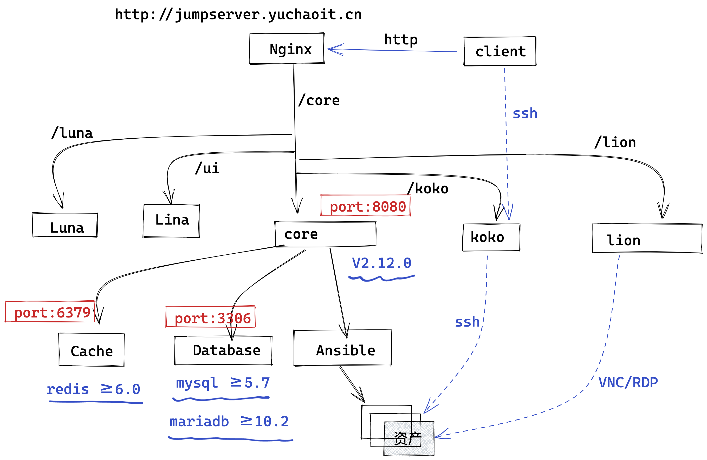
访问core后台
默认账密
admin
admin
首次登录提示你要改密码
chaoge666
默认不让你直接访问
四、部署前端lina
前后端架构图
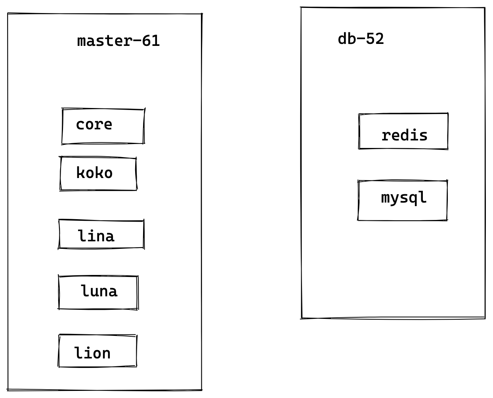
Lina⚓︎
Lina 是 JumpServer 的前端 UI 项目，主要使用 Vue, Element UI 完成。
环境要求⚓︎
| Name | Lina | Node |
|---|---|---|
| Version | v2.12.0 | 10 |
下载源代码⚓︎
可以从 Github 网站上获取最新的 Release 副本。这些版本是最新代码的稳定快照，从项目网站下载 Source code.tar.gz 源代码，通过命令行中提取该存档：
mkdir -p /opt/lina-v2.12.0
wget -O /opt/lina-v2.12.0.tar.gz https://github.com/jumpserver/lina/archive/refs/tags/v2.12.0.tar.gz
cd /opt/lina-v2.12.0
tar -xf lina-v2.12.0.tar.gz -C /opt/lina-v2.12.0 --strip-components 1
部署nodejs开发环境
安装 Node⚓︎
从 Node 官方网站参考文档部署 Node.js，请根据 环境要求，通过命令行中判断是否安装完成：
mkdir -p /opt/node-v10.24.1 && cd /opt/node-v10.24.1 && wget https://nodejs.org/dist/v10.24.1/node-v10.24.1-linux-x64.tar.gz
tar -xf node-v10.24.1-linux-x64.tar.gz --strip-components 1
tail -1 /etc/profile
export PATH=$PATH:/opt/python369/bin/:/opt/node-v10.24.1/bin
[root@master-61 ~]#node -v
v10.24.1
安装前端依赖
[root@master-61 ~]#npm -v
6.14.12
[root@master-61 ~]#cd /opt/lina-v2.12.0/
[root@master-61 /opt/lina-v2.12.0]#ls
alias.config.js build dump.rdb jsconfig.json lina-v2.12.0.tar.gz nginx.conf postcss.config.js README.md tests vue.config.js
babel.config.js Dockerfile jest.config.js LICENSE mock package.json public src utils yarn.lock
[root@master-61 /opt/lina-v2.12.0]#
[root@master-61 /opt/lina-v2.12.0]#npm install -g yarn
[root@master-61 /opt/lina-v2.12.0]#
[root@master-61 /opt/lina-v2.12.0]#
[root@master-61 /opt/lina-v2.12.0]#yarn install
yarn install v1.22.18
[1/5] Validating package.json...
[2/5] Resolving packages...
[3/5] Fetching packages...
warning url-loader@1.1.2: Invalid bin field for "url-loader".
[4/5] Linking dependencies...
warning " > less-loader@5.0.0" has unmet peer dependency "webpack@^2.0.0 || ^3.0.0 || ^4.0.0".
warning " > html-webpack-plugin@3.2.0" has unmet peer dependency "webpack@^1.0.0 || ^2.0.0 || ^3.0.0 || ^4.0.0".
warning " > compression-webpack-plugin@6.1.1" has unmet peer dependency "webpack@^4.0.0 || ^5.0.0".
warning " > sass-loader@7.3.1" has unmet peer dependency "webpack@^3.0.0 || ^4.0.0".
warning " > script-ext-html-webpack-plugin@2.1.3" has unmet peer dependency "webpack@^1.0.0 || ^2.0.0 || ^3.0.0 || ^4.0.0".
[5/5] Building fresh packages...
success Saved lockfile.
warning Your current version of Yarn is out of date. The latest version is "1.22.19", while you're on "1.22.18".
info To upgrade, run the following command:
$ curl --compressed -o- -L https://yarnpkg.com/install.sh | bash
Done in 81.81s.
修改前端配置文件
以生产环境下的做法，这里需要填写后端IP地址。
vi .env.development
# 全局环境变量 请勿随意改动
ENV = 'development'
# base api
VUE_APP_BASE_API = ''
VUE_APP_PUBLIC_PATH = '/ui/'
# vue-cli uses the VUE_CLI_BABEL_TRANSPILE_MODULES environment variable,
# to control whether the babel-plugin-dynamic-import-node plugin is enabled.
# It only does one thing by converting all import() to require().
# This configuration can significantly increase the speed of hot updates,
# when you have a large number of pages.
# Detail: https://github.com/vuejs/vue-cli/blob/dev/packages/@vue/babel-preset-app/index.js
VUE_CLI_BABEL_TRANSPILE_MODULES = true
# External auth
VUE_APP_LOGIN_PATH = '/core/auth/login/'
VUE_APP_LOGOUT_PATH = '/core/auth/logout/'
# Dev server for core proxy
VUE_APP_CORE_HOST = 'http://localhost:8080' # 修改成 Core 的 url 地址
VUE_APP_ENV = 'development'
运行前端（后台运行）
执行 yarn serve
5 warnings found.
You may use special comments to disable some warnings.
Use // eslint-disable-next-line to ignore the next line.
Use /* eslint-disable */ to ignore all warnings in a file.
App running at:
- Local: http://localhost:9528/ui/
- Network: http://10.0.0.61:9528/ui/
Note that the development build is not optimized.
To create a production build, run yarn build.
# 后台运行
[root@master-61 /opt/lina-v2.12.0]#nohup yarn serve &
[1] 16518
[root@master-61 /opt/lina-v2.12.0]#nohup: ignoring input and appending output to ‘nohup.out’
[root@master-61 /opt/lina-v2.12.0]#jobs
[1]+ Running nohup yarn serve &
# 检查端口
[root@master-61 /opt/lina-v2.12.0]#netstat -tunlp |grep 9528
tcp 0 0 0.0.0.0:9528 0.0.0.0:* LISTEN 16529/node
访问前端
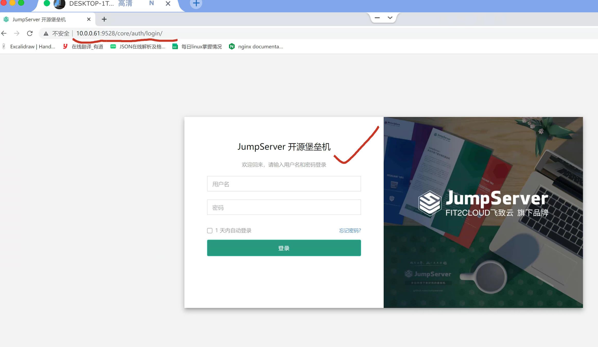
构建前端生成静态页面交给nginx
上面这个命令，用于前端工程师，测试网页是否正常，线上是build之后，发给运维，生成静态网页。
[root@master-61 /opt/lina-v2.12.0]#yarn build:stage
Images and other types of assets omitted.
DONE Build complete. The lina directory is ready to be deployed.
INFO Check out deployment instructions at https://cli.vuejs.org/guide/deployment.html
Done in 32.00s.
吐槽下，官方文档，这里写的都是错的，这tmd运维要是看不懂前端，玩个锤子？
辣鸡。。
查看打包后的静态文件
[root@master-61 /opt/lina-v2.12.0]#ls lina -l
total 12
drwxr-xr-x 6 root root 51 May 21 21:12 assets
-rw-r--r-- 1 root root 12126 May 21 21:12 index.html
至此，前端静态页部署结束，可以交给nginx展示了，后续要设置nginx的虚拟主机即可。
这里了解即可，需要前端工程师的配合设置。
五、luna部署
Luna 是 JumpServer 的前端 UI 项目, 主要使用 Angular CLI 完成。
其中 Lina 和 Luna 为纯静态文件，最终由 nginx 整合。
1.部署node
[root@master-61 /opt/jumpserver-v2.12.0]#node -v
v10.24.1
2.获取源码，安装
mkdir /opt/luna-v2.12.0
wget -O /opt/luna-v2.12.0.tar.gz https://github.com/jumpserver/luna/archive/refs/tags/v2.12.0.tar.gz
tar -xf luna-v2.12.0.tar.gz -C /opt/luna-v2.12.0 --strip-components 1
cd luna-v2.12.0
安装依赖前端依赖
yum -y install gcc gcc-c++
npm install
# 必须安装对应版本的 node-sass依赖，否则又是一堆报错。
SASS_BINARY_SITE=https://npm.taobao.org/mirrors/node-sass/ npm install node-sass@4.13.0
3.修改配置文件
这里，我们是将jumpserver前后端放在同一台机器了，因此localhost没问题。
否则需要填写后端服务器的IP。
[root@master-61 /opt/luna-v2.12.0]#cat proxy.conf.json
{
"/koko": {
"target": "http://localhost:5000",
"secure": false,
"ws": true
},
"/media/": {
"target": "http://localhost:8080",
"secure": false,
"changeOrigin": true
},
"/api/": {
"target": "http://localhost:8080",
"secure": false,
"changeOrigin": true
},
"/core": {
"target": "http://localhost:8080",
"secure": false,
"changeOrigin": true
},
"/static": {
"target": "http://localhost:8080",
"secure": false,
"changeOrigin": true
},
"/lion": {
"target": "http://localhost:9529",
"secure": false,
"pathRewrite": {
"^/lion/monitor": "/monitor"
},
"ws": true,
"changeOrigin": true
}
}
4.启动luna（后台运行）
# 安装ng命令，用于启动前端服务器，注意，必须是这个版本（再次吐槽，官网文档，就不能用心点写吗？一堆烂坑）
npm install -g @angular/cli@1.3.2
结果如下
+ @angular/cli@1.3.2
added 903 packages from 681 contributors, removed 97 packages and updated 51 packages in 40.214s
# 后台运行命令如下，必须运行在0.0.0.0地址上，否则不通。
[root@master-61 /opt/luna-v2.12.0]#nohup ng serve --proxy-config proxy.conf.json --host 0.0.0.0 &
# 检查端口
[root@master-61 /opt/luna-v2.12.0]#netstat -tunlp|grep 4200
tcp 0 0 0.0.0.0:4200 0.0.0.0:* LISTEN 7155/@angular/cli
5.编译静态文件
体验编译过程即可。
ng build
查看静态文件
[root@master-61 /opt/luna-v2.12.0]#ll -d dist/
drwxr-xr-x 4 root root 4096 May 23 15:15 dist/
[root@master-61 /opt/luna-v2.12.0]#ll dist/
total 27780
drwxr-xr-x 7 root root 75 May 23 15:15 assets
-rw-r--r-- 1 root root 165742 May 23 15:15 fontawesome-webfont.eot
-rw-r--r-- 1 root root 444379 May 23 15:15 fontawesome-webfont.svg
-rw-r--r-- 1 root root 165548 May 23 15:15 fontawesome-webfont.ttf
-rw-r--r-- 1 root root 98024 May 23 15:15 fontawesome-webfont.woff
-rw-r--r-- 1 root root 77160 May 23 15:15 fontawesome-webfont.woff2
-rw-r--r-- 1 root root 3493 May 23 15:15 index.html
-rw-r--r-- 1 root root 381 May 23 15:15 loading.gif
-rw-r--r-- 1 root root 380687 May 23 15:15 main.js
-rw-r--r-- 1 root root 344846 May 23 15:15 main.js.map
-rw-r--r-- 1 root root 143258 May 23 15:15 MaterialIcons-Regular.eot
-rw-r--r-- 1 root root 128180 May 23 15:15 MaterialIcons-Regular.ttf
-rw-r--r-- 1 root root 57620 May 23 15:15 MaterialIcons-Regular.woff
-rw-r--r-- 1 root root 44300 May 23 15:15 MaterialIcons-Regular.woff2
-rw-r--r-- 1 root root 265793 May 23 15:15 polyfills.js
-rw-r--r-- 1 root root 257549 May 23 15:15 polyfills.js.map
-rw-r--r-- 1 root root 6224 May 23 15:15 runtime.js
-rw-r--r-- 1 root root 6214 May 23 15:15 runtime.js.map
-rw-r--r-- 1 root root 441610 May 23 15:15 scripts.js
-rw-r--r-- 1 root root 522847 May 23 15:15 scripts.js.map
drwxr-xr-x 3 root root 18 May 23 15:15 static
-rw-r--r-- 1 root root 2686771 May 23 15:15 styles.js
-rw-r--r-- 1 root root 2855086 May 23 15:15 styles.js.map
-rw-r--r-- 1 root root 9316491 May 23 15:15 vendor.js
-rw-r--r-- 1 root root 9995663 May 23 15:15 vendor.js.map
六、部署Koko
Koko 是 Go 版本的 coco，重构了 coco 的 SSH/SFTP 服务和 Web Terminal 服务。
Koko组件用于基于ssh的跳板机登录，统一管理。
环境要求⚓︎
| Name | KoKo | Go |
|---|---|---|
| Version | v2.12.0 | 1.15 |
下载koko二进制命令
不用自己再编译了
mkdir /opt/koko-v2.12.0
wget https://github.com/jumpserver/koko/releases/download/v2.12.0/koko-v2.12.0-linux-amd64.tar.gz
tar -xf koko-v2.12.0-linux-amd64.tar.gz -C /opt/koko-v2.12.0 --strip-components 1
cd koko-v2.12.0
下载golang-1.15
直接下载二进制版本
wget https://golang.google.cn/dl/go1.15.linux-amd64.tar.gz
tar -xf go1.15.linux-amd64.tar.gz
添加path
[root@master-61 /opt/go/bin]#
[root@master-61 /opt/go/bin]#tail -1 /etc/profile
export PATH=$PATH:/opt/python369/bin/:/opt/node-v10.24.1/bin:/opt/go/bin/
确认版本
[root@master-61 /opt/go/bin]#go version
go version go1.15 linux/amd64
修改koko配置文件
[root@master-61 /opt/koko-v2.12.0]#cp config_example.yml config.yml
# 修改配置文件
vi config.yml
具体修改内容如下，注意要修改些什么
注意大坑，这里的bootstrap_token第一次注册后，就给删掉，反复启动会报错。
# 项目名称, 会用来向Jumpserver注册, 识别而已, 不能重复
# NAME:
# Jumpserver项目的url, api请求注册会使用
CORE_HOST: http://127.0.0.1:8080 # Core 的地址
# Bootstrap Token, 预共享秘钥, 用来注册coco使用的service account和terminal
# 请和jumpserver 配置文件中保持一致，注册完成后可以删除
BOOTSTRAP_TOKEN: "$BOOTSTRAP_TOKEN"
# 和 Core config.yml 的值保持一致
# 启动时绑定的ip, 默认 0.0.0.0
BIND_HOST: 0.0.0.0
# 监听的SSH端口号, 默认2222
SSHD_PORT: 2222 # 使用 0.0.0.0:2222
# 监听的HTTP/WS端口号，默认5000
HTTPD_PORT: 5000 # 使用 0.0.0.0:5000
# 项目使用的ACCESS KEY, 默认会注册,并保存到 ACCESS_KEY_STORE中,
# 如果有需求, 可以写到配置文件中, 格式 access_key_id:access_key_secret
# ACCESS_KEY: null
# ACCESS KEY 保存的地址, 默认注册后会保存到该文件中
# ACCESS_KEY_FILE: data/keys/.access_key
# 设置日志级别 [DEBUG, INFO, WARN, ERROR, FATAL, CRITICAL]
LOG_LEVEL: DEBUG # 开发建议设置 DEBUG, 生产环境推荐使用 ERROR
# SSH连接超时时间 (default 15 seconds)
# SSH_TIMEOUT: 15
# 语言 [en,zh]
# LANGUAGE_CODE: zh
# SFTP的根目录, 可选 /tmp, Home其他自定义目录
# SFTP_ROOT: /tmp
# SFTP是否显示隐藏文件
# SFTP_SHOW_HIDDEN_FILE: false
# 是否复用和用户后端资产已建立的连接(用户不会复用其他用户的连接)
# REUSE_CONNECTION: true
# 资产加载策略, 可根据资产规模自行调整. 默认异步加载资产, 异步搜索分页; 如果为all, 则资产全部加载, 本地搜索分页.
# ASSET_LOAD_POLICY:
# zip压缩的最大额度 (单位: M)
# ZIP_MAX_SIZE: 1024M
# zip压缩存放的临时目录 /tmp
# ZIP_TMP_PATH: /tmp
# 向 SSH Client 连接发送心跳的时间间隔 (单位: 秒)，默认为30, 0则表示不发送
# CLIENT_ALIVE_INTERVAL: 30
# 向资产发送心跳包的重试次数，默认为3
# RETRY_ALIVE_COUNT_MAX: 3
# 会话共享使用的类型 [local, redis], 默认local
# SHARE_ROOM_TYPE: local
# Redis配置
# REDIS_HOST: 127.0.0.1 # 如果需要部署多个 koko, 需要通过 redis 来保持会话
# REDIS_PORT: 6379
# REDIS_PASSWORD:
# REDIS_CLUSTERS:
# REDIS_DB_ROOM:
精简的配置
[root@master-61 /opt/koko-v2.12.0]#grep -Ev '^(#|$)' config.yml
CORE_HOST: http://127.0.0.1:8080 # Core 的地址
BOOTSTRAP_TOKEN: "$BOOTSTRAP_TOKEN"
BIND_HOST: 0.0.0.0
SSHD_PORT: 2222 # 使用 0.0.0.0:2222
HTTPD_PORT: 5000 # 使用 0.0.0.0:5000
LOG_LEVEL: DEBUG # 开发建议设置 DEBUG, 生产环境推荐使用 ERROR
启动koko
确保端口起了，才是正确访问。
[root@master-61 /opt/koko-v2.12.0]#./koko -f config.yml -d
[root@master-61 /opt/koko-v2.12.0]#netstat -tunlp |grep koko
tcp6 0 0 :::5000 :::* LISTEN 8550/./koko
tcp6 0 0 :::2222 :::* LISTEN 8550/./koko
七、部署Lion
Lion 使用了 Apache 软件基金会的开源项目 Guacamole，JumpServer 使用 Golang 和 Vue 重构了 Guacamole 实现 RDP/VNC 协议跳板机功能。
目前，常用的远程管理协议有以下 4 种：
RDP（remote desktop protocol）协议：远程桌面协议，大部分 Windows 系统都默认支持此协议，Windows 系统中的远程桌面管理就基于该协议。
RFB（Remote FrameBuffer）协议：图形化远程管理协议，VNC 远程管理工具就基于此协议。
Telnet：命令行界面远程管理协议，几乎所有的操作系统都默认支持此协议。此协议的特点是，在进行数据传送时使用明文传输的方式，也就是不对数据进行加密。
SSH（Secure Shell）协议：命令行界面远程管理协议，几乎所有操作系统都默认支持此协议。和 Telnet 不同，该协议在数据传输时会对数据进行加密并压缩，因此使用此协议传输数据既安全速度又快。
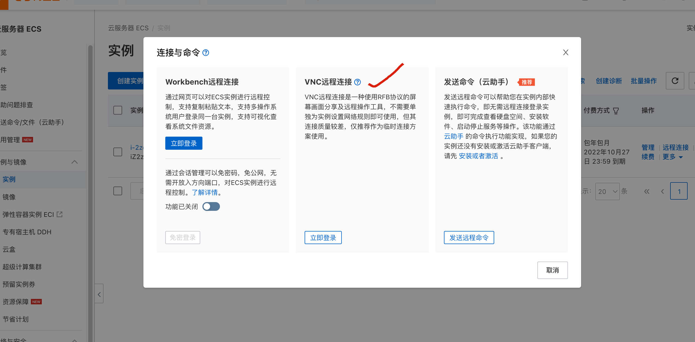
环境要求⚓︎
| Name | JumpServer | Guacd | Lion |
|---|---|---|---|
| Version | v2.12.0 | 1.3.0 | v2.12.0 |
可以从 Github 网站上获取对应的 guacd 副本。这些版本是最新代码的稳定快照，从项目网站下载 Source code.tar.gz 源代码，通过命令行中提取该存档：
mkdir /opt/guacamole-v2.12.0
cd /opt/guacamole-v2.12.0
wget http://download.jumpserver.org/public/guacamole-server-1.3.0.tar.gz
tar -xzf guacamole-server-1.3.0.tar.gz
cd guacamole-server-1.3.0/
构建guacd
guacd 是 Guacamole Web 应用程序使用的 Guacamole 代理守护进程，并且
框架。由于 JavaScript 无法处理二进制协议（如 VNC 和远程
桌面）有效地开发了一种新的基于文本的协议，该协议将
包含高效远程桌面所需操作的通用超集
访问，但对 JavaScript 程序来说很容易处理。guacd 是
在任意协议和 Guacamole 协议之间进行转换的代理。
简单说，就是远程桌面需要依赖的一个程序。
# 踩坑了
yum -y install cairo-devel libjpeg-devel libpng-devel uuid-devel
./configure --with-init-dir=/etc/init.d
make
make install
ldconfig
下载Lion
cd /opt
wget https://github.com/jumpserver/lion-release/releases/download/v2.12.0/lion-v2.12.0-linux-amd64.tar.gz
tar -xf lion-v2.12.0-linux-amd64.tar.gz
cd lion-v2.12.0-linux-amd64
修改配置文件
cp config_example.yml config.yml
vi config.yml
具体配置
# 项目名称, 会用来向Jumpserver注册, 识别而已, 不能重复
# NAME:
# Jumpserver项目的url, api请求注册会使用
CORE_HOST: http://127.0.0.1:8080 # Core 的地址
# Bootstrap Token, 预共享秘钥, 用来注册使用的service account和terminal
# 请和jumpserver 配置文件中保持一致，注册完成后可以删除
BOOTSTRAP_TOKEN: "$BOOTSTRAP_TOKEN"
# 启动时绑定的ip, 默认 0.0.0.0
BIND_HOST: 0.0.0.0
# 监听的HTTP/WS端口号，默认8081
HTTPD_PORT: 8081
# 设置日志级别 [DEBUG, INFO, WARN, ERROR, FATAL, CRITICAL]
LOG_LEVEL: DEBUG # 开发建议设置 DEBUG, 生产环境推荐使用 ERROR
# Guacamole Server ip， 默认127.0.0.1
# GUA_HOST: 127.0.0.1
# Guacamole Server 端口号，默认4822
# GUA_PORT: 4822
# 会话共享使用的类型 [local, redis], 默认local
# SHARE_ROOM_TYPE: local
# Redis配置
# REDIS_HOST: 127.0.0.1
# REDIS_PORT: 6379
# REDIS_PASSWORD:
# REDIS_DB_ROOM:
启动guacd
[root@master-61 /opt/lion-v2.12.0-linux-amd64]#/etc/init.d/guacd start
Starting guacd: guacd[15533]: INFO: Guacamole proxy daemon (guacd) version 1.3.0 started
SUCCESS
启动Lion
[root@master-61 /opt/lion-v2.12.0-linux-amd64]#nohup ./lion -f config.yml &
[1] 15577
[root@master-61 /opt/lion-v2.12.0-linux-amd64]#nohup: ignoring input and appending output to ‘nohup.out’
[root@master-61 /opt/lion-v2.12.0-linux-amd64]#jobs
[1]+ Running nohup ./lion -f config.yml &
八、部署Nginx
主配置文件
至少是1.18.0版本以上
[root@master-61 /opt/lion-v2.12.0-linux-amd64]#nginx -v
nginx version: nginx/1.20.1
[root@master-61 /etc/nginx]#grep -Ev '^$|#' nginx.conf
user nginx;
worker_processes auto;
error_log /var/log/nginx/error.log;
pid /run/nginx.pid;
include /usr/share/nginx/modules/*.conf;
events {
worker_connections 1024;
}
http {
log_format main '$remote_addr - $remote_user [$time_local] "$request" '
'$status $body_bytes_sent "$http_referer" '
'"$http_user_agent" "$http_x_forwarded_for"';
access_log /var/log/nginx/access.log main;
sendfile on;
tcp_nopush on;
tcp_nodelay on;
keepalive_timeout 65;
types_hash_max_size 4096;
include /etc/nginx/mime.types;
default_type application/octet-stream;
include /etc/nginx/conf.d/*.conf;
}
jumpserver.conf
这里也可以作为参考，一个完整的，企业级的nginx.conf如何设置。
严格按照于超老师的配置来。
详细配置
server {
listen 80;
# server_name www.yuchaoit.cn;
client_max_body_size 5000m; 文件大小限制
# Luna 配置
# 经过实测，这个v12版本，只能http://10.0.0.61:4200/luna/这样去访问，前端这里有点难处理。
location /luna/ {
proxy_pass http://luna:4200;
}
# Core data 静态资源
location /media/replay/ {
add_header Content-Encoding gzip;
root /opt/jumpserver-v2.12.0/data/;
}
location /media/ {
root /opt/jumpserver-v2.12.0/data/;
}
location /static/ {
root /opt/jumpserver-v2.12.0/data/;
}
# KoKo Lion 配置
location /koko/ {
proxy_pass http://koko:5000;
proxy_set_header X-Real-IP $remote_addr;
proxy_set_header Host $host;
proxy_set_header X-Forwarded-For $proxy_add_x_forwarded_for;
proxy_http_version 1.1;
proxy_buffering off;
proxy_set_header Upgrade $http_upgrade;
proxy_set_header Connection "upgrade";
}
# lion 配置
location /lion/ {
proxy_pass http://lion:8081;
proxy_buffering off;
proxy_request_buffering off;
proxy_http_version 1.1;
proxy_set_header X-Forwarded-For $proxy_add_x_forwarded_for;
proxy_set_header Upgrade $http_upgrade;
proxy_set_header Connection $http_connection;
proxy_ignore_client_abort on;
proxy_connect_timeout 600;
proxy_send_timeout 600;
proxy_read_timeout 600;
send_timeout 6000;
}
# Core 配置
location /ws/ {
proxy_pass http://core:8070;
proxy_set_header X-Real-IP $remote_addr;
proxy_set_header Host $host;
proxy_set_header X-Forwarded-For $proxy_add_x_forwarded_for;
proxy_http_version 1.1;
proxy_buffering off;
proxy_set_header Upgrade $http_upgrade;
proxy_set_header Connection "upgrade";
}
location /api/ {
proxy_pass http://core:8080;
proxy_set_header X-Real-IP $remote_addr;
proxy_set_header Host $host;
proxy_set_header X-Forwarded-For $proxy_add_x_forwarded_for;
}
location /core/ {
proxy_pass http://core:8080;
proxy_set_header X-Real-IP $remote_addr;
proxy_set_header Host $host;
proxy_set_header X-Forwarded-For $proxy_add_x_forwarded_for;
}
# 前端 Lina
location /ui/ {
proxy_pass http://lina:9528;
proxy_set_header X-Real-IP $remote_addr;
proxy_set_header Host $host;
proxy_set_header X-Forwarded-For $proxy_add_x_forwarded_for;
}
location / {
rewrite ^/(.*)$ /ui/$1 last;
}
}
做好dns解析
[root@master-61 /opt/luna-v2.12.0]#tail -1 /etc/hosts
10.0.0.61 luna koko lion core lina
启动nginx
[root@master-61 /etc/nginx]#nginx -t
nginx: the configuration file /etc/nginx/nginx.conf syntax is ok
nginx: configuration file /etc/nginx/nginx.conf test is successful
[root@master-61 /etc/nginx]#systemctl restart nginx
八、访问jumpserver
1.验证登录（core功能是否正常）
1. 入口，http://10.0.0.61/ 自动跳转到lina
可以判断出 lina前端，和core后台服务都正常，以及数据库。
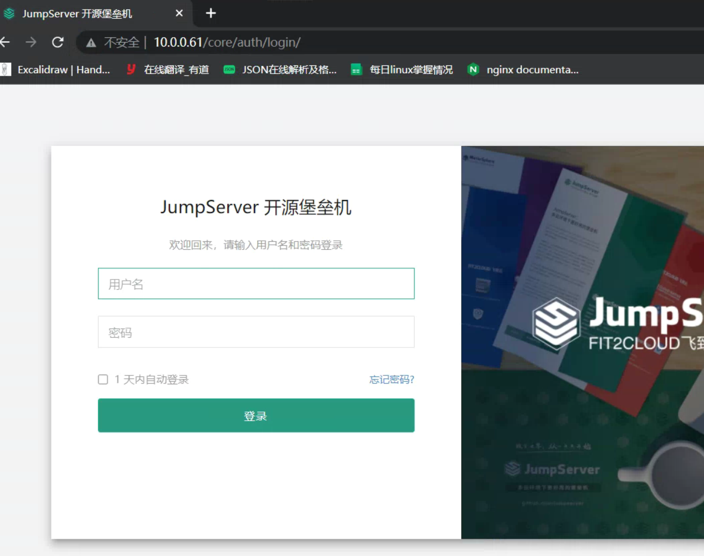
账号密码，
admin
chaoge666
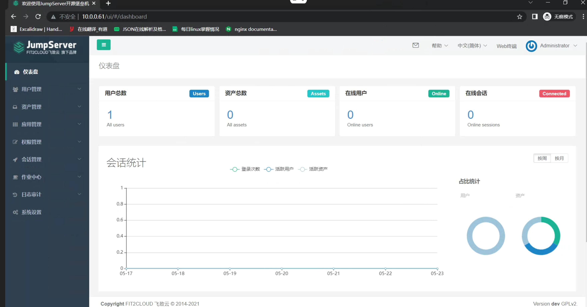
2.端口检查
正确运行的情况下，应该有如下端口
作为参考
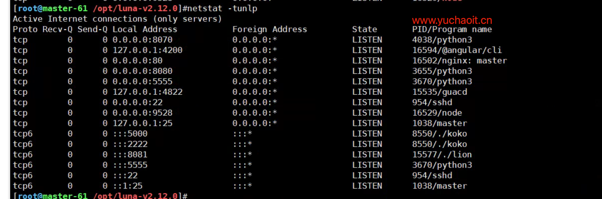